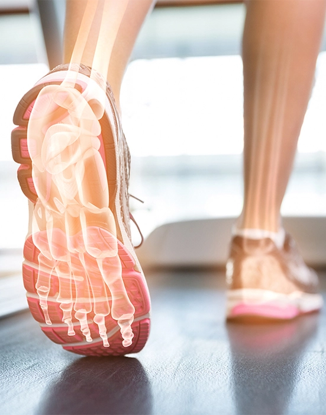
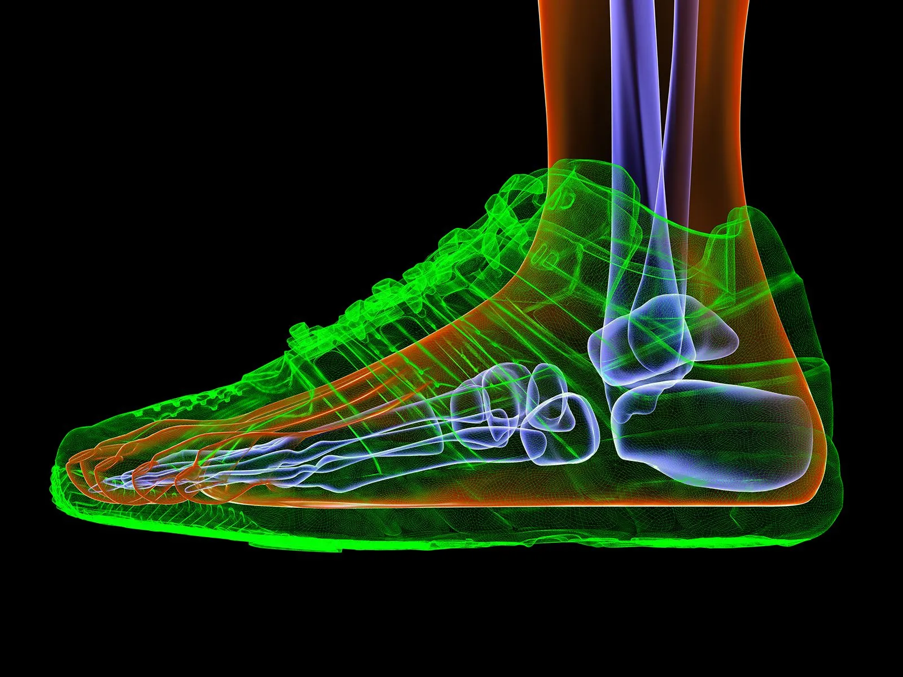
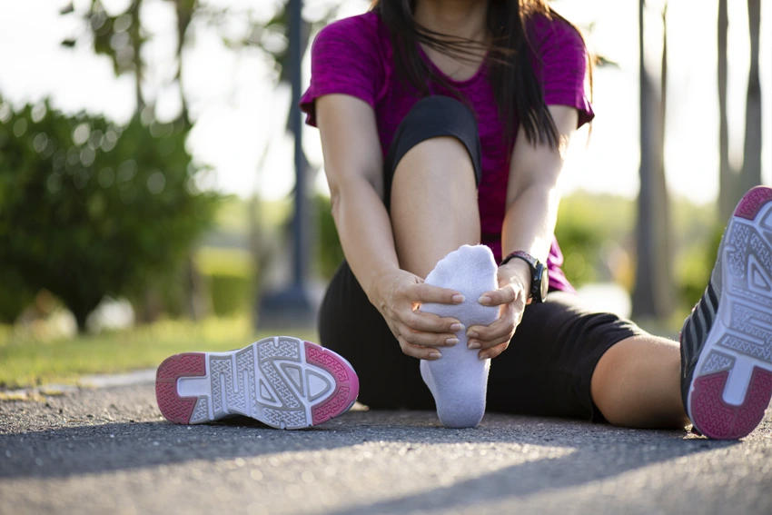

Somos especialistas en cuidar la pisada de todo tipo de deportistas, atendiendo a las necesidades particulares de cada deporte, categoría y paciente.

El cuidado del pie debería estar presente a lo largo de toda nuestra vida. No podemos olvidar que nuestros pies van a soportar entre 2 y 4 veces nuestro peso a cada paso que damos. En las personas deportistas aún es más importante, si cabe, el cuidado de la pisada, ya que se trata de un gesto que se va a realizar miles de veces.
Si nuestra pisada no es adecuada no solo repercute a nuestros pies, sino a todo nuestro cuerpo. Las articulaciones que más pueden sufrir en relación a una forma de pisar defectuosa es la rodillas, caderas y lumbares. De la misma manera, muchos de los músculos que se insertan en la pierna, tienen otra inserción en el pie. Si cuidamos nuestra pisada, lo más probable es que podamos disfrutar durante toda la vida de manera saludable del deporte.

Para cuidar la pisada de nuestros pacientes disponemos de la más alta tecnología para diagnosticar con precisión si la forma de pisar de un deportista puede tener relación con una lesión presente o futura.
Lo ideal es realizar un estudio biomecánico de la pisada previo a la aparición de la lesión. Este estudio estaría indicado en cualquier persona que comience a practicar deporte de forma habitual y por supuesto en todas aquellas personas que lo realizan de forma intensa o profesional.
El tratamiento con plantillas personalizadas se diseña mediante un sofisticado Software de desarrollo propio, seleccionando un espesor distinto en las diferentes partes de la plantilla para cada paciente (no trabajando con plantillas de espesores genéricos). Posteriormente y de manera robotizada se fabrica la plantilla con un proceso de alta precisión.
Esta metodología nos permite dar a cada plantilla el grado justo de elasticidad que requiere cada paciente, con el objetivo de mejorar su rendimiento deportivo y prevenir lesiones.

Tratamientos de lesiones más habituales: